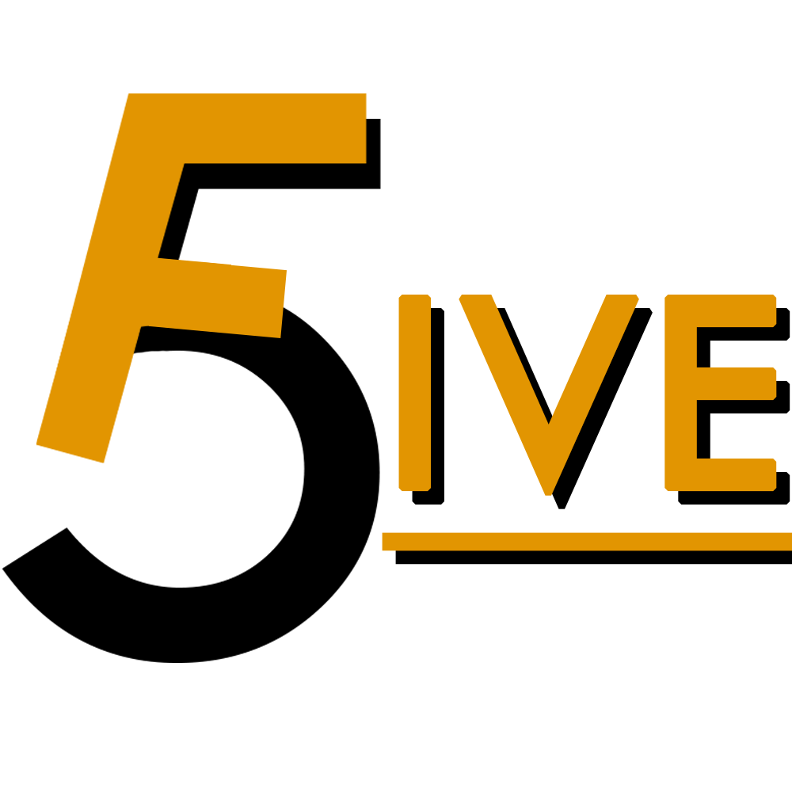
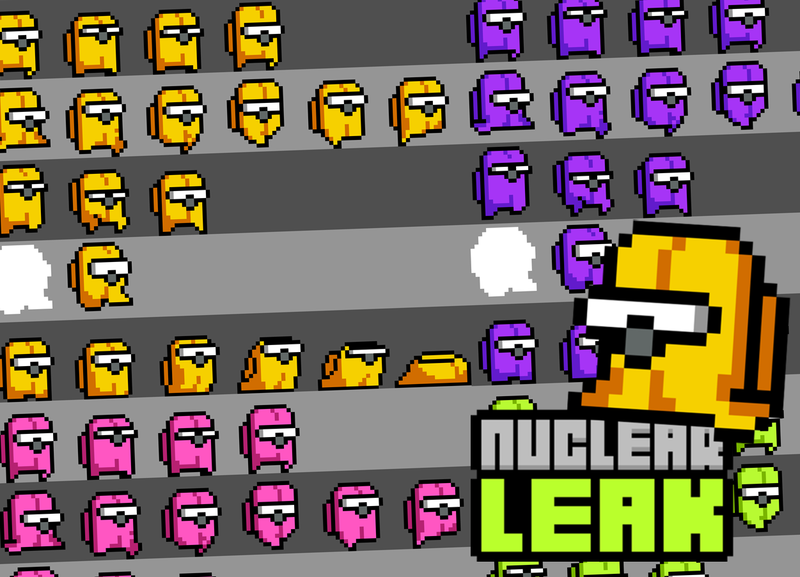

Présentation
FiveGuys est un jeu 2D de type rogue-like que nous avons développé en groupe. Les niveaux sont générés aléatoirement et procéduralement, offrant ainsi une expérience unique à chaque partie. Le jeu comporte 2 niveaux et plusieurs cinématiques, notamment pour l'entrée des boss, la mort et la fin de jeu. Les joueurs peuvent choisir leur personnage et ont accès à un inventaire avec des statistiques et la possibilité de jeter des objets. Chaque boss possède des difficultés différentes et des mécaniques uniques, offrant ainsi un gameplay varié et stimulant.
Captures d'écran

